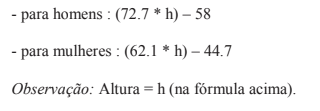

1.Escreva um programa em que o usuário informe dois números utilizando o "prompt"
Então
escreva em
tela
o maior deles.
2.Faça um programa que leia um valor informado pelo usuário e diga se o valor informado é positivo,
negativo
ou zero.
3.Faça um programa para ler 3 valores (considere que não serão informados valores iguais) e escrever
o maior
deles.
4.Faça um programa que leia 3 valores (considere que não serão informados valores iguais) e escrever
a soma
dos 2 maiores.
5.Faça um programa que leia dois valores informados pelo usuário e exiba uma das três mensagens a
seguir:
Números iguais,
caso os números sejam iguais Primeiro é maior, caso o primeiro seja maior que o
segundo; Segundo maior, caso o segundo seja maior que o primeiro.
6.Faça um programa que leia 10 valores informados pelo usuário, calcule, exiba os números
informados
e
escreva a média aritmética desses valores lidos.
7.Faça um programa que receba quatro valores informados pelo usuário, mas informe somente o
primeiro,
o último e o maior de todos eles (considere que todos os números informados serão diferentes).
8. Faça um programa que leia 10 números informados pelo usuário e ao final da leitura escrever a soma
total
dos 10 números lidos.
9. Faça um programa que leia 6 números que o usuário vai informar. Todos os números lidos com valor
inferior
a 72 devem ser somados.
Escreva o valor final da soma efetuada e também todos valores que o usuário informou.
10. Escreva um programa que calcule a média de quatro números informados pelo usuário, mas somente se
esses
números forem maiores que 0 e menores que 10.
No final, se a média for maior que cinco o usuário receberá uma mensagem "Você passou no teste".
Em qualquer
outra situação, ele receberá uma mensagem de "tente novamente".
11. Um motorista de táxi deseja calcular o rendimento de seu carro na praça.
Sabendo-se que o preço do combustível é de R$ 2,90, escreva um programa para ler:
a marcação do odômetro (Km) no início do dia, a marcação (Km) no final do dia, o número de litros de
combustível
gasto e o valor total (R$) recebido dos passageiros. Calcular e escrever:
a média do consumo em Km/L e o lucro (líquido) do dia.
12. A equipe Mercedes deseja calcular o número mínimo de litros que deverá colocar no tanque de seu
carro
para que ele possa percorrer um determinado número de voltas até o primeiro reabastecimento.
Escreva um programa que leia o comprimento da pista (em metros), o número total de voltas a serem
percorridas
no grande prêmio, o número de reabastecimentos desejados e o consumo de combustível do carro (em Km/L).
O programa deve calcular e exibir o número mínimo de litros necessários para percorrer até o primeiro
reabastecimento.
Observação: considere que a quantidade de voltas entre os reabastecimentos é o mesmo, mas não poderá ser
maior ou igual a 2.
O usuário deve informar a quantidade de quilômetros total do circuito e a quantidade de litros que o carro
pode possuir.
13. Escreva um programa para ler as notas das 4 avaliações de um aluno no semestre,
calcular e escrever a média do semestre e a seguinte mensagem: PARABÉNS! Você foi aprovado!
somente se o aluno foi aprovado (considere 6.0 a média mínima para aprovação e 4 notas informadas).
14. Acrescente ao exercício anterior a mensagem "Infelizmente, você foi reprovado!" caso a média
calculada seja menor que 6.0.
15.Escreva um programa para ler o ano de nascimento de uma pessoa e escrever uma mensagem que
diga
se ela poderá ou não votar este ano (não é necessário considerar o mês em que ela nasceu).
16.As maçãs custam R$ 0,30 cada se forem compradas menos do que uma dúzia,
e R$ 0,25 se forem compradas pelo menos doze. Escreva um programa que leia o número de maçãs compradas
(considere que o usuário informará a quantidade), e calcule e escreva o valor total da compra.
17.Escreva um programa que verifique a validade de uma senha fornecida pelo usuário.
A senha válida é o número "1234" sem aspas. Devem ser impressas as seguintes mensagens:
"ACESSO PERMITIDO" caso a senha seja válida. "ACESSO NEGADO" caso a senha seja inválida.
18.Tendo como entrada a altura e o sexo (codificado da seguinte forma: 1: feminino 2: masculino)
de uma pessoa, construa um programa que calcule e imprima seu peso ideal, utilizando as seguintes
fórmulas:

19.Escreva um programa para ler o número de gols marcados pelo Grêmio e o número de gols marcados
pelo Inter em um GRENAL.
Escrever o nome do vencedor. Caso não haja vencedor deverá ser impressa a palavra EMPATE.
20.Escreva um programa para ler o número de lados de um polígono regular e a medida do lado (em
cm).
21. Escreva um programa que leia as notas das duas avaliações normais e a nota da avaliação
optativa.
Calcular a média do semestre considerando que a prova optativa substitui a nota mais baixa entre as duas
primeiras avaliações.
Escrever a média e mensagens que indiquem se o aluno foi aprovado, reprovado ou está em exame
22.A Loja Remi du Fromage está com uma promoção onde cada capacete artesanal para tartaruga custa
R$18.230
e pode ser pago em até 15 vezes sem juros.
Crie um programa onde o usuário possa informar o valor parcelas que deseja pagar e exiba o valor de cada
parcela.
23.Faça um programa em que o usuário informe 20 valores e no final, escreva o maior e o menor valor
lido.
24.Um zoológico muito louco
Escreva um programa que leia a idade de 2 javalis e 2 girafas
(considere que a idade dos javalis será sempre diferente, assim como das girafas ).
Calcule e escreva a soma das idades do javali mais velho com a girafa mais nova,
e o produto das idades do javali mais novo com a girafa mais velha.
25. Uma micro calculadora
Escreva um programa para ler 2 valores inteiros informados pelo usuário e uma das seguintes operações
a serem executadas (codificada da seguinte forma: 1.Adição, 2.Subtração, 3.Divisão, 4.Multiplicação).
O programa deve calcular e escrever o resultado dessa operação sobre os dois valores lidos.
Observação: Considere que só serão lidos os valores 1, 2, 3 ou 4 para as operações.
FIM!